Please download the pdf for better visuality
Download Survival GuideDear Participants!
We are very happy that you decided to choose our summer course and spend the best days of your life in Estonia! This survival guide will provide you with all the necessary information about Tallinn and some advice that might help you survive this unforgettable trip!
What's Estonia Like?
Although the smallest of the Baltic countries, Estonia (Eesti) makes its presence felt in the region with its
lovely seaside towns, charming country villages, deep forests and rich marshlands, all of which set the scene for
discovering many cultural and natural gems. Yet Estonia is also known for magnificent castles, pristine islands
and a cosmopolitan capital amid medieval splendour. It's no wonder Estonia is no longer Europe's best-kept secret.
The country has distinctly more women than men. For every 100 females in Estonia, there are 84 men – only the Northern Mariana Islands,
a US territory in the Pacific, with a population of around 50,000, has a smaller percentage of males. Estonian women live 10 years longer,
on average, which goes some way to explaining it.
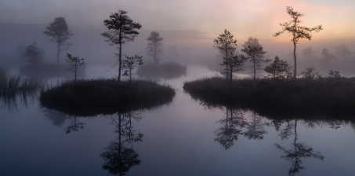
Fun facts About Our Country
➤ We have two very fun sports: wife carrying and swinging (kiiking)
➤ We have most models per square kilometer.
➤ Our highest ’’mountain’’ is 318 meters high, and we’re very proud of it!
➤ Forests cover 51% of our country
Cool Tourist Attractions In Tallinn
Tallinn's Old Town
Tallinn's Old Town is one of the best preserved medieval cities in Europe and is listed as a UNESCO World Heritage Site. In the Old Town we recommend you visit the Town Hall Square. St. Olav’s Church and Kohtuotsa viewing platform. Also near the Old Town are important places like Kadriorg Palace, Tallinn Song Festival Grounds and Seaplane Harbour Museum.
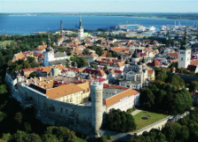
The Town Hall
As in the Middle Ages, the Town Hall Square is the heart of the Old Town. Historically, it served as a marketplace, but today is the stage for various events, the most well-known being the Christmas Market. As you may have guessed, the square takes its name from the gothic Town Hall building. During the summer, visitors can climb the Town Hall’s tower to a 34-metre-high belfry balcony with views over the Old Town.
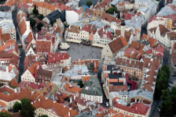
St. Olav’s Church
If you’re not afraid of heights, explore the vertical wonders of the Old Town. St. Olav’s Church was once the tallest building in the world during the 15th and 16th centuries. Today, its tower remains the most defining element of the Tallinn skyline, which visitors can ascend during the summer season for magnificent views.
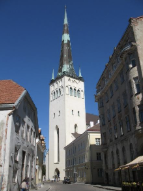
Kohtuotsa viewing platform
Kohtuotsa viewing platform is one of the most photographed places in Tallinn. From here, a panorama including St. Olav’s spire, the modern city centre, many of the Town Wall’s defence towers and much more can be seen.
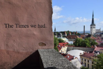
Kadriorg Palace
Just a short walk or tram ride from the Old Town, Kadriorg Palace is a stunning jewel of baroque architecture. It was built in the era of Tsar Peter the Great and named after his wife Catherine. Its neatly manicured gardens are home to many museums. While in Kadriorg park, also be sure to visit the next mentioned site.
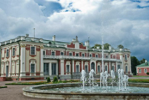
Tallinn Song Festival Grounds
This arched stage and performance venue hosts Estonia’s largest event – the Song and Dance Celebration. It was here in 1988 that the Singing Revolution spurred Estonia’s road to renewed independence. This year the Song Festival will also be happening.
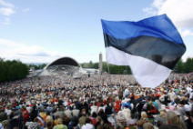
Seaplane Harbour Museum
It is Tallinn’s most popular museum, and for good reason. The century-old seaplane hangar houses modern maritime exhibits that will educate and entertain guests of all ages. Learn about Estonian history through its connection to the sea, and climb inside a real submarine.
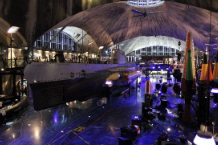
Arrival Information
Make sure you buy your bus/train/plane/boat ticket to Tallinn, Estonia. We don’t want you arriving in Finland or Latvia.
(But sometimes it’s cheaper if you come by bus from Riga for about 7-20€.)
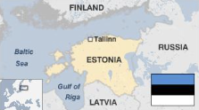
ARRIVAL BY PLANE
If you come by plane then you can take the tram nr 4 from the airport to “Viru” peatus and walk about 10 min to our hostel Alur which is located on the outskirts of the famous Old Town. You can find the tram stop if you keep walking to the right after exiting the baggage claim of the Airport. ennujaam is Estonian for Airport.
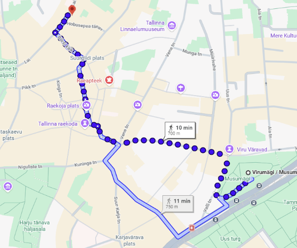
ARRIVAL BY BUS
If you come to Tallinn by bus, take the bus nr 23 from the bus station and exit the nr 23 bus in ’’Kaubamaja’’ stop and walk around ’’Viru Keskus’’ to the Old Town, where Alur Hostel is located. It is about a 15 minute walk.
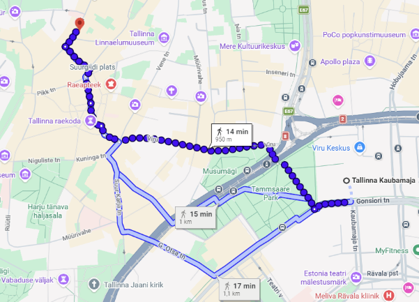
ARRIVAL BY OTHER MEANS
The address of Alur Hostel is ’’Lai 20’’. In case you want to order yourself a taxi, you should download the app Bolt and order the taxi there (so you don’t get ‘’tourist scammed’’ by regular taxis). If you are not able to find your way or can't use GPS to navigate from bus stops to Alur Hostel then just contact any of the organizers and we will help you navigate or if necessary come get you ourselves. The organizers contacts are at the end of this guide. Google Maps is your friend when it comes to commuting in Estonia!
Some Important Things You Should Know
✓ Estonian summers can vary from 10 to 25 degrees. It may be sunny or rain all the time. So try to take that into consideration whilst packing.
✓ Our BEST office is located inside Tallinn University of Technology, it’s address is Ehitajate tee 5. The phone number of our office is +372 620 3625.
✓ And don't worry about transportation during the course, we'll handle it and it won't be at any extra expense.
✓ And the same goes for the food. We’ll provide three meals per day, at least one of them hot, and take your dietary constrictions and allergies into consideration when planning the food. Don’t worry, we’ll take good care of you.
What Should You Pack?
• ID card/passport or visa if you need it
• Money for extra food, shopping etc
• Big towel, swimming clothes (and slippers) for sauna
• Clothes fitting the weather (cold and hot, make sure to check weather reports)
• Personal hygiene items
• Your medicine (if needed)
• Typical drink and food from your country - for International Evening
• Health insurance if possible (you can obtain a European Health and Insurance Card at www.ehicard.org for free)
• Student card (for example www.isic.org)
• Good mood
• Lots of energy
• BEST-Spirit!!
Useful Words & Phrases In Estonian
Hello! – Tere!
Goodbye – Head aega!
Good morning! – Tere hommikust!
Good night – Head ööd!
My name is... – Minu nimi on...
Tallinn University of Technology – Tallinna Tehnikaülikool
Thank you! - Aitäh!
Sorry – Vabandust
I have a BMW – Mul on bemm
Let’s go to the club, I want to dance! – Lähme kluppi, ma tahan tantsida!
A beer please! – Üks õlu palun!
Let’s have a drink! – Joome!
You’re beautiful – Sa oled imeilus
I like you - Sa meeldid mulle
I love you - Ma armastan sind
What are you doing tonight? – Mida sa õhtul teed?
Cheers! – Terviseks!
Give me the vodka! – Anna viin siia!
I want to sleep – Ma tahan poolt liitrit viina
Prices In Estonia
SUPERMARKETS
• 0.5 litre beer ~1...1.5 €
• 0.5 litre Coke ~0,85-1,5 €
• 0.5 litre cheap Vodka ~7 €
• 0.5 litre Vana Tallinn ~11-12€
• Snickers ~0,60 €
• Marlboro ~4 €
• 1 kilo of bananas ~1€
• 1 kilo of apples ~1 €
• 1 kilo of carrots ~0,40€
• 170g potato chips ~1,25 €
• 1 pack of fast noodles ~0,25...0,50 €
• A pack of toilet paper ~1,5 €
EATING OUT, CLUBBING, DEPENDING ON PLACES
• 0.5 litre beer 2...3 €
• 250 ml Coke 1...1,60 €
• a shot of Vodka/Vana Tallinn 1,60...3 €
• a cup of coffee/espresso 1...2 €
• vodka cocktail/Cuba libre/gin tonic etc.3...5€
• a good meal in the city 4...10 €
• a big mac meal 4...5 €
• eating in the student canteen 1,80...5 €
TRANSPORTATION
• 1km of cheap taxi in Tallinn ~0,40...0,50 €
• 1 bus-ticket in Tallinn ~1,50 €
Core Team Info
Main Organizer – Elisabeth Adler
Call me at: +372 5042 499
E-mail me at: elisabeth.adler@icloud.com
Fundraising Responsible – Florence Loore Ritso
Call me at: +372 5042 499
E-mail me at: elisabeth.adler@icloud.com
Social Responsible – Katriin Kruus
Call me at: +372 5042 499
E-mail me at: elisabeth.adler@icloud.com
Academic Responsible – Diana Mesias
Call me at: +372 5042 499
E-mail me at: elisabeth.adler@icloud.com
Food and Logistics Responsible – Marten Lilleorg
Call me at: +372 5309 0884
E-mail me at: marten.lilleorg@gmail.com